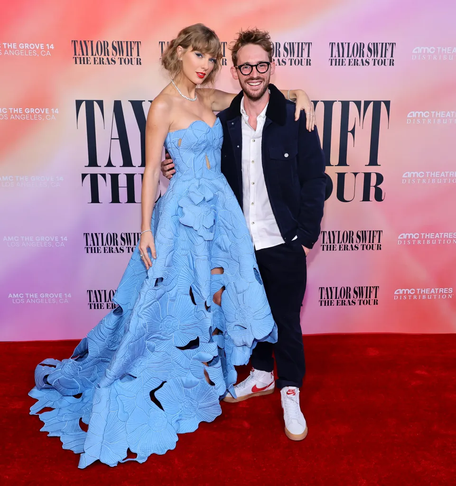
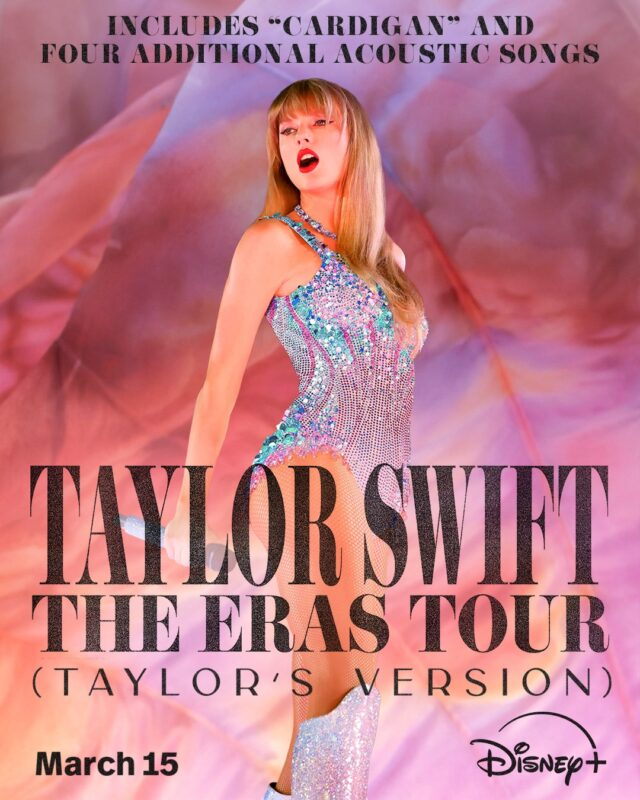

Eras Tour: The Movie
Swift has also released a movie of the three hour long concert, titled: Taylor Swift: The Eras Tour. First released on October 13 in theaters in the U.S. at $19.89 for adults and $13.13 for children and seniors, the 2 hr 45 min movie contained most of the songs from the concert. However, Swift cut out a few sorely-missed songs, which were:
- The Archer (Lover)
- 'tis the d-mn season (evermore)
- Long Live (Speak Now (Taylor's Version)) [song played during credits]
- cardigan (folklore)
- Wildest Dreams (1989 (Taylor's Version))
The movie was directed by Sam Wrench, cinematographed by Brett Turnbull, and edited by Dom Whitworth, Guy Harding, Hamish Lyons, Rupa Rathod, Ben Wainwright-Pearce, and Mark 'Reg' Wrench. AMC Theaters served as both distributor and exhibitor of the movie. Swift's in-house production company, Taylor Swift Productions, and Silent House Productions produced the film together. It was estimated that the film cost $10–20 million. The movie was able to be produced amidst the 2023 SAG-AFTRA strike because it received approval from SAG-AFTRA as a non-AMPTP production that met the same standards the unions want. The SAG-AFTRA chief negotiator, Duncan Crabtree-Ireland, stated that Swift came to them and said she wanted to do this, but only if she could do it the right way under a union contract. Swift would announce this movie's run in the U.S. on August 31, 2023. On September 26, 2023, she would announce it was going to be released globally as well. It premiered at The Grove in Los Angeles on October 11, 2023.

The entirety of the movie was recorded in Los Angeles, with the two surprise songs included being You're On Your Own, Kid (Midnights) and Our Song (Taylor Swift). The 2 hour 45 minute long movie is actually 30 minutes shorter than the actual concert, so not only were some songs cut out, costume changes (time spent backstage) and applause were also cut.
The movie broke box office records, scoring an earning of $261.6 million dollars, becoming the highest-grossing concert film of all time. It also amassed a record $37 million in pre-sales in the U.S. and over $100 million in pre-sales globally. The movie would be screened at least four times per day from Thursday to Sunday each week of its run in chains AMC, Regal, Cineplex, Cinépolis, Cinemex, and Odeon. Many fans watched it more than once.
Following the explosive success of the movie in theaters, Swift would announce that the movie would be avaiable for rent on December 13 (her birthday). The price was $19.89 USD for 48 hours; a "buy" option was unavailable. This movie, called Taylor Swift: The Eras Tour [Extended Version], contains all the songs cut out of the original movie (except cardigan and 'tis the d-mn season) as well as the original movie setlist. However, much to the chagrin of some swifties, these songs were not edited into their corresponding eras, but instead placed at the end as "EXTRA PERFORMANCES".
On February 7, 2024, Swift would announce that a new rendition of her movie (perhaps her final rendition of her movie), Taylor Swift: The Eras Tour (Taylor's Version), would be available for streaming on Disney+ on March 15, 2024. This rendition will contain cardigan, as well as four additional acoustic songs. Disney+ allegedly paid more than $75 million for streaming rights after winning a bidding war between Netflix and Universal.
A link to the trailer: TAYLOR SWIFT | THE ERAS TOUR Concert Film Official Trailer
Movie Poster (streaming):
